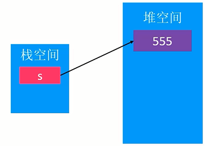
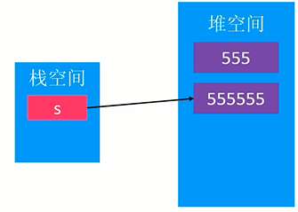
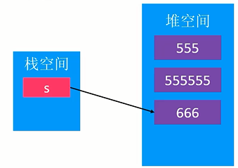
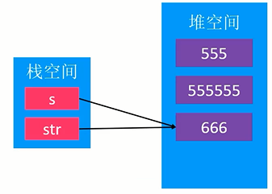
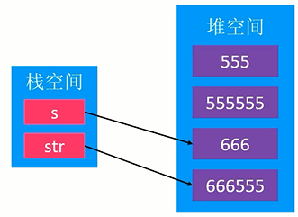
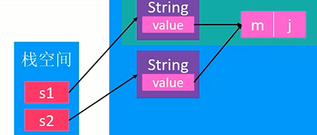
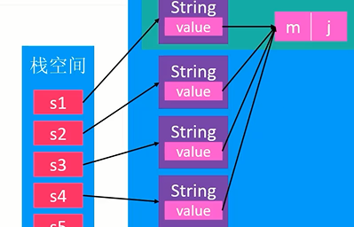
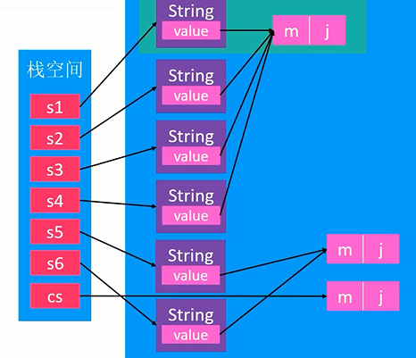

Java_String
字符串
- Java的字符串是在
java.lang包中，所以可以直接使用，无需引包。 - Java 8之前的String是用char数组实现的。即
"abc"的底层实现为{'a', 'b', 'c'}。 - 从Java 9开始，改为使用byte数组实现。
- 字符串字面量实际是String类的实例（相当于自动给你new了一个String，假设为s1，但是如果第二次用这个字面量初始化s2的话，就不会重新new了，而是直接把s1的对象引用给s2，详见
==）。 - String对象一旦创建完毕，该对象内部其中的字符内容不可以修改。
- 但是String对象指针的指向可以更改。
内存位置
1 | public class Main |
String字符串都是new出来的，因此都是在堆空间中。





字符串常量池 (String Constant Pool, SCP)
- 字符串常量池。是指：从Java 7开始，属于堆空间的一部分。（以前是放在方法区中的）
- 遇到字符串字面量时，会去查SCP。
- 如果SCP中匹配到与该字面量内容一致的字符串对象A时，则返回A。
- 否则创建一个新的对象D，加入到SCP中，返回D。
1 | String s1 = "xcg"; |
1 | String s1 = "xcg"; |
传入常量字符串的new底层：
1 | new String("xcg"); |
"xcg"的底层空间是只有一份的，在SCP中。而new String("xcg")本质上只是新创建了一个String对象，value的拷贝只是把旧地址给了新String中的value指针。即两个value数组是同一个地址的数组。这属于浅拷贝。

因此，s1到s4只是String对象地址不同，但是，内部的value数组是同一个。

传入字符数组的new底层：
1 | char[] cs = {'x', 'c', 'g'}; |
可以看到，用字符数组去new一个String的话，底层要深拷贝一个数组，即产生一个新数组的地址赋给String对象内部的value指针。

intern方法
1 | public native String intern(); |
被native关键字修饰，代表不是用Java编写的，可能是C语言。返回一个字符串。
作用是：如果SCP中存在一个与B内容一样的字符串对象A，则返回A；否则，将B加入到SCP中，返回B。
看下面的代码：
1 | public class static void main(String[] args) |
s1不等于s2，因为通过format生成的字符串不是字符串常量！因此，s1和s2指向的字符数组不是字符串常量池中的变量。
去SCP观察有没有重复串的情况仅限于涉及到字符串字面量的情况，或者用另一个字符串对象直接构造新的。或者：直接调用String类的intern方法，这是手动去观察SCP有无重复串。但是要记住了，intern有一个隐形操作：”否则，将B加入到SCP中“！
因此，在s1调用了intern之后，s1的内容"123"就放入了常量池中。一旦intern被调用过一次，那么之后s2的intern返回的就是常量池中的地址了。
因此，s3==s4。
至于s5，因为是用字符串字面量初始化的，所以隐形调用了intern，所以实际指向的也是s1的value地址。
我们可以推测出，两个字符串直接==判断是去判断内部成员的value地址是否一样。即判断是否是浅拷贝。
字符串常用方法
去除左右空格 - trim
去除首左、尾右的空格
1 | " 123 456 ".trim() // -> 123 456 |
contains
是否包含目标串（字符串匹配）
1 | "123456".contains("34") |
split
将字符串按照分隔符分割为数组
1 | "1_2_3_4".split("_") // -> [1, 2, 3, 4] |
compareTo
挨个比较大小
1 | "abc".compareTo("adc") |
equals
查看内容是否相等
1 | String s1 = "abc"; |
==
如果直接用s1 == s2去比较字符串，则变成了引用之间的比较。则是去比较的是两个字符串对象的内存地址。
1 | public class Test |
截取子串 - subString
截取beginIndex及之后的，endIndex之前的串。左闭右开。
1 | int beginIndex = 2; |
替换目标串 - replace
1 | "xcg123go".replace("123", "Never"); // xcgNervergo |
StringBuilder
与String相比，共同点是都实现了CharSequence接口。
在进行字符串频繁的改动时（拼接、替换等），使用StringBuilder。
1 | StringBuilder sb = new StringBuilder(); |
常用方法
append, insert, delete, replace, reverse
append原理
StringBuilder的底层是也是一个value = new char[n];的字符数组。
与String的不同是，这个字符数组有预留空间，记录length来标记数组中有效结尾。
当空间满时，动态扩容。